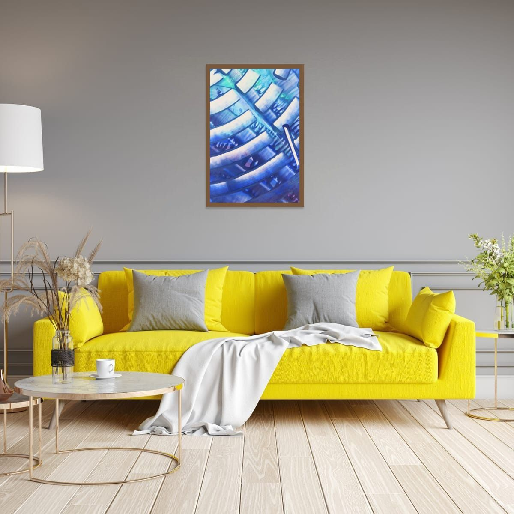
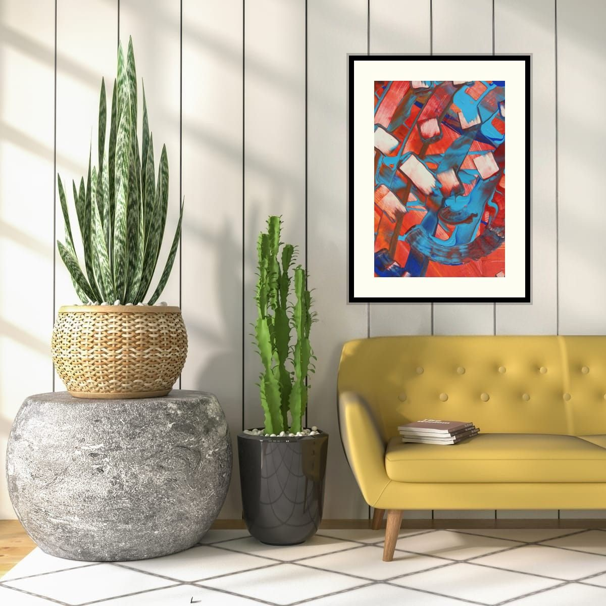

The short answer
Pick one color that already exists in the room, in a cushion, the rug, a plant, a book spine, and choose art where that color appears. Then let the art bring something the room does not have yet. Shared color connects the art to the room; contrast makes it worth looking at.
Start with what you have
Walk around the room and list the colors you see, not just the big ones. The sofa and walls are usually neutral. The interesting colors live in the small things: a green cushion, a rust throw, blue glass, the warm tone of a wooden floor. Those small accents are the easiest bridge between your room and a piece of art.
The 60–30–10 balance
A long-standing decorating guideline divides a room's colors roughly into three parts: about 60 percent for the main color, usually walls and large furniture; about 30 percent for a secondary color, such as the sofa, rug or curtains; and about 10 percent for an accent. Art often carries that 10 percent accent, or ties the 30 percent together.
It is a guideline, not a law, but it explains why a room with strong art and calm furniture feels balanced, and why a room where everything is bold feels tiring.
Three ways to connect art and room
Echo one accent
The art contains a color that appears somewhere else in the room, in small amounts. A blue cushion and a print with blue in it. This is the easiest and most reliable approach.
Contrast with the main furniture
Choose art in a color opposite the sofa on the color wheel: orange or red with a blue sofa, violet with a yellow one, red with green. Complementary contrast is energetic and makes both colors look stronger.

Stay in one color family
For a calm, tonal room, choose art in different shades of the color already dominant there: blues in a blue room, greens and olives in a green one. To keep it from blending in, look for art with strong value contrast, light and dark areas.
Why exact matching fails
Art chosen to match the sofa exactly tends to disappear into it, and the room starts to look like a furniture showroom. It also ties the art to that one sofa forever. Art that shares an accent or contrasts thoughtfully keeps working when you change the cushions, the rug, or move house.

Patterned rugs and busy rooms
If the room already has a lot going on, a patterned rug, printed curtains, a gallery of objects, the art should calm things down rather than add more. Choose a piece with larger areas of color and simpler movement, and take one color from the busiest pattern in the room. That single shared color is enough to make everything feel planned.
In a very minimal room, the opposite is true: the art can be the busiest thing in the space, with strong movement and many colors, because nothing competes with it.
When the sofa is the statement
A bold sofa, emerald velvet, mustard, a strong blue, is already the main event. Art above it works best either in a complementary color that makes the sofa look even better, or in a calmer palette with just a touch of the sofa's color. Avoid art that is equally bold in a third, unrelated color; the two will fight for attention.
Wood, metal and plants count too
Colors are not only in paint and fabric. Wood floors and furniture bring warm oranges and browns, plants bring greens, brass and gold bring yellow warmth, and black metal brings contrast. A print with warm oranges can connect beautifully with a room full of wood, even if there is no orange fabric anywhere.
Checklist
- List the small accent colors already in the room.
- Choose art that echoes one of them.
- Or contrast the sofa with an opposite color.
- Or stay in one color family with strong light and dark contrast.
- Never match the sofa exactly.
These are general guidelines, not strict rules. Every room is different, and a few inches either way will not ruin a good wall. Room scenes are digital mockups; the artworks are details of real hand-painted paintings. Prints are offered in several sizes and formats on the shops linked from each artwork page.